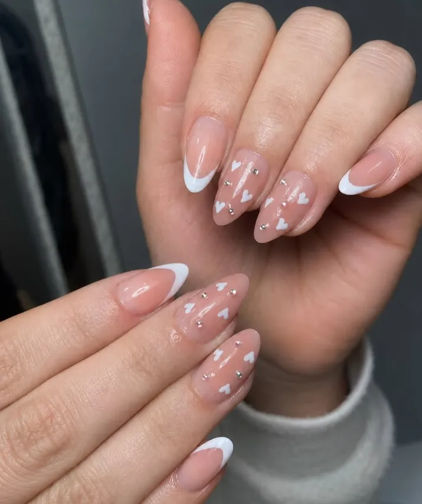

Atendimento com horário marcado
Fabi Silver
Nails designer · Molde F1, alongamento e esmaltação em gel
Serviços
- Molde F1Técnica com molde que dá formato e curvatura à unha em gel.
- Alongamento de unhasUnhas mais longas em formato quadrado, amendoado ou stiletto.
- Esmaltação em gelCor em gel lisa ou com francesinha, linhas, corações e strass.
Valores e horários são combinados pelo WhatsApp.
Formatos
- Quadrado
- Amendoado
- Stiletto
Sobre a Fabi
Nails designer
A Fabi Silver é nails designer e faz cada trabalho desta página. Formato, comprimento, cor e decoração são combinados com você antes de começar.
Trabalhos da Fabi
Agende seu horário
Chame no WhatsApp: a mensagem já vai escrita, é só enviar.
Agendar pelo WhatsApp